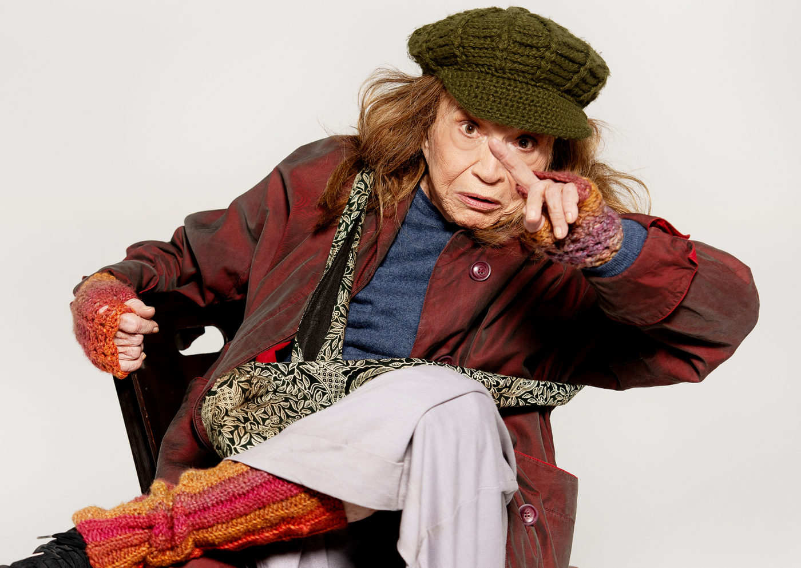

Nathalia Timberg volta aos palcos em “A Mulher da Van”, com direção de Ricardo Grasson

Nova temporada do espetáculo estreia no dia 4 de julho no Teatro Bravos, em São Paulo, com grande elenco e reflexões sobre tolerância, afeto e envelhecimento
Após temporada de sucesso, o espetáculo “A Mulher da Van”, de Alan Bennett, retorna aos palcos em São Paulo a partir do dia 4 de julho, no Teatro Bravos, em Pinheiros. A montagem brasileira, estrelada por Nathalia Timberg, que completa 96 anos em 2025, permanece em cartaz até 3 de agosto, com sessões às sextas, sábados e domingos. A direção é de Ricardo Grasson, e o elenco conta ainda com Caco Ciocler, Nilton Bicudo, Duda Mamberti, Roberto Arduin, Lilian Blanc, Noemi Marinho, Cléo De Páris e Lara Córdulla.
Baseado na história real do próprio autor, o texto reflete sobre as complexas relações humanas, a intolerância, o cuidado com o outro e o etarismo, temas que ganham nova luz com a força do elenco e o olhar da encenação brasileira.
Uma história real com humor e humanidade
“A Mulher da Van” narra a insólita convivência entre um dramaturgo e uma mulher em situação de rua que, após estacionar sua van na garagem dele por três semanas, acaba permanecendo por 15 anos. A trama, já adaptada para o cinema com Maggie Smith, ganha no palco uma leitura sensível e bem-humorada sobre empatia, convivência e o inesperado afeto entre desconhecidos.
Segundo o diretor Ricardo Grasson, o espetáculo era um desejo antigo de Nathalia Timberg. “Ela tinha esse texto há mais de 15 anos. Durante a peça ‘33 Variações’, em 2016, me contou sobre o sonho de montá-lo. Depois de cinco anos afastada dos palcos por conta da pandemia, me ligou para retomar o projeto, possivelmente seu último trabalho”, conta.
Grasson ainda ressalta a escolha do elenco: “São atores que têm o dom da transfiguração, da composição profunda, que se transformam completamente em cena. Reunimos um time muito poderoso.”
Encenação e estética
A montagem opta por não atualizar o texto, preservando sua essência, mas introduzindo elementos do realismo fantástico na estética da cena. “Toda a parte plástica tem essa influência. É como distorcemos a realidade para nos aproximarmos dela”, comenta o diretor.
A peça conta com tradução de Clara Carvalho, cenografia de Cesar Costa, iluminação de Cesar Pivetti, trilha sonora e desenho de som de LP Daniel, figurinos de Marichilene Artichevics e visagismo de Simone Momo.
SERVIÇO
A Mulher da Van
📍 Teatro Bravos — Rua Coropé, 88 – Pinheiros – São Paulo/SP
📅 Temporada: 4 de julho a 3 de agosto de 2025
🗓 Sessões: Sextas às 21h; sábados às 17h e 21h; domingos às 18h
🎭 Texto: Alan Bennett | Direção: Ricardo Grasson
🎟 Ingressos:
Plateia Premium: R$ 200 (inteira) | R$ 100 (meia)
Plateia Baixa: R$ 160 (inteira) | R$ 80 (meia)
Mezanino: R$ 120 (inteira) | R$ 60 (meia)
🛒 Vendas: Sympla ⏳ Duração: 100 minutos
👤 Classificação: 12 anos
♿ Acessibilidade: Total (cadeirantes e mobilidade reduzida)
💺 Capacidade: 611 lugares
🌐 Mais informações: www.teatrobravos.com.br